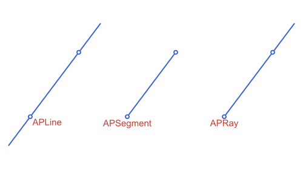
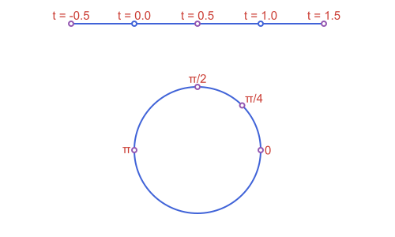

Points, Lines & Rays: Creating Them
These are the building blocks everything else in the package is made of.
- A point is
APPoint, and a vector (a free direction, with no fixed location) is the separate typeAPVector. Both wrap the same(x, y)coordinate pair, but keeping them distinct meansAPVectorcan carry its own meaning (a direction, e.g. whatdirectionreturns) without being confused for a location. Arithmetic between them stays permissive on purpose:APPoint - APPointstill gives back anAPPoint(not a vector), so familiar formulas like2*about - pkeep working exactly as before. See the table below. - A segment is a finite piece of straight line between two points:
APSegment. - A line (
APLine) is the infinite straight line through two points, and a ray (APRay) is the half-line starting at an origin and passing through a second point. Both are small immutable structs holding the two defining points.
All four are part of the package's own AP-prefixed type hierarchy (see Apollonius.jl for the full tree): APPoint/APVector sit directly under APObject, while APSegment/APLine/APRay are all APCurves.
| Type | Represents | Fields |
|---|---|---|
APPoint | a point in the plane | p[1], p[2] (x, y) |
APVector | a free direction/displacement | v[1], v[2] (x, y) |
APSegment | the segment [p1, p2] | s[1], s[2] (also .p1, .p2) |
APLine | the infinite line through p1, p2 | l[1], l[2] (also .p1, .p2) |
APRay | the half-line from origin through through | r[1], r[2] (also .origin, .through) |
None of APSegment/APLine/APRay carry a direction magnitude (an APLine through p1 and p2 is the same object as the line through p2 and p1), but APSegment and APRay do remember which of their two points comes first, since that is what makes them finite/one-sided in the first place.
APPoint/APVector/APSegment/APLine/APRay all support destructuring (x, y = p, p1, p2 = s) for convenience, including flattening a whole collection of them into their defining points at once, via Iterators.flatten:
using Apollonius
c1, c2 = APCircle2(APPoint(0.0, 0.0), 2.0), APCircle2(APPoint(10.0, 0.0), 1.0)
l1, l2 = external_tangent_lines(c1, c2)
collect(Iterators.flatten([l1, l2])) # the 4 points of tangency, in one Vector{APPoint}4-element Vector{APPoint{2, Float64}}:
[0.2, 1.98997487421324]
[10.1, 0.99498743710662]
[0.2, -1.98997487421324]
[10.1, -0.99498743710662]
But every APObject/APTransform (this one included) is always a scalar for broadcasting purposes, so translate.(p, [v1, v2]) or intersection.(l, [c1, c2]) repeats the single shape against each element of the other argument, rather than Julia's usual f.(x) mistaking an iterable x for a collection to broadcast over its own components.
Creating them
using Apollonius
A = APPoint(3.0, 4.0)
O = APPoint(0.0, 0.0)
s = APSegment(O, A) # the segment from O to A
l = APLine(O, A) # the infinite line through O and A
r = APRay(O, A) # the half-line starting at O, through A
distance(O, A)5.0distance(O, A) is 5.0: with A = APPoint(3.0, 4.0), this is just the classic 3-4-5 triangle. APSegment, APLine and APRay all wrap the same two points here. What differs is only how far they extend and what other functions are willing to do with them (e.g. is_on_segment only makes sense for an APSegment, slope_angle treats APLine and APRay as pointing one way and an APSegment as pointing from its first point to its second).
From a direction
A line or a ray can also be built from a point and a direction, given as a vector or as an angle (radians, counterclockwise from the positive x-axis). A segment can be built from a point and a vector, or from a length and an angle:
p0 = APPoint(1.0, 1.0)
APLine(p0, APVector(2.0, 1.0)), APLine(p0, pi / 6)(APLine([1.0, 1.0] -> [3.0, 2.0]), APLine([1.0, 1.0] -> [1.8660254037844388, 1.5]))APRay(p0, -pi / 2), APSegment(p0, APVector(3.0, 0.0)), APSegment(p0, 5.0, pi / 3)(APRay([1.0, 1.0] -> [1.0, 0.0]), APSegment([1.0, 1.0] -> [4.0, 1.0]), APSegment([1.0, 1.0] -> [3.5000000000000004, 5.330127018922193]))
See script
using Apollonius
using Luxor
import Apollonius: midpoint
import Luxor: julia_red, julia_blue, julia_purple
lxm = @prepare_to_picture! width=500 height=240 margin=20 begin
p = APPoint(-1.0, -1.0)
v = APVector(2.0, 1.0)
vec = APEquipollentVector(v, p)
l = APLine(p, v)
q = APPoint(5.0, -1.0)
seg = APSegment(q, 3.0, 2pi / 3)
ang_seg = APAngle2(q, q + APVector(1.0, 0), seg.p2)
r0 = APPoint(-3.0, 3.0)
ray = APRay(r0, -pi / 4)
ang_ray = reverse(APAngle2(r0, r0 + APVector(1.0, 0), ray.through))
end
begin
Drawing(lxm.width, lxm.height, :svg)
origin(); fontsize(15)
arc_seg = only(marks(ang_seg; size=50))
arc_ray = only(marks(ang_ray; size=50))
@layer begin
sethue(julia_blue); setopacity(0.25)
path(APCircularSector2(arc_seg), action=:fill)
path(APCircularSector2(arc_ray), action=:fill)
setopacity(1)
path(arc_seg, action=:stroke)
path(arc_ray, action=:stroke)
end
sethue(julia_purple)
path(l, action=:stroke)
path(ray, action=:stroke)
path(seg, action=:stroke)
sethue(julia_blue)
path(vec; as=:arrow, action=:stroke)
sethue(julia_red)
text("line", p + APVector(-5.0, -5.0), halign=:right, direction=l, valign=:bottom)
text("segment", midpoint(seg) + APVector(3,0), direction=-direction(seg), halign=:right, valign=:bottom)
text("ray", r0 + APVector(-8.0,5.0), direction=ray, valign=:top)
sethue("white")
path([p, q, r0], action=:fillpreserve)
sethue(julia_blue); strokepath()
finish()
endThe forms with a vector use the two points p and p + v, so l.p2 - l.p1 is v itself. The forms with an angle use a unit vector. A zero vector raises an ArgumentError.
Points vs. vectors
A point minus a point is still a point, not a vector. A - O above stays an APPoint. This is a deliberate choice: it keeps existing point-arithmetic formulas (like a reflection written as 2*about - p) working exactly as they read, without forcing every subtraction through a vector type first. Where a genuine direction is called for (the result of direction below, for instance), the package hands back an actual APVector instead:
d = direction(l) # an APVector, not an APPoint
typeof(d)APVector{2, Float64}
Both types support the same arithmetic and the standard linear-algebra functions norm, dot and normalize, re-exported from LinearAlgebra purely so using Apollonius alone is enough to get the full vector toolkit, without a separate using LinearAlgebra:
norm(d) # 5.0
normalize(d) # ⟨0.6, 0.8⟩: unit vector, same direction
dot(d, APVector(1.0, 0.0)) # 3.03.0Giving a vector a position: APEquipollentVector
An APVector is deliberately positionless. That's exactly what makes it the right type for direction(l), a normal, or anything else that's purely "which way and how far," never "where." That positionlessness means a bare APVector has no APBoundingBox at all (isempty(APBoundingBox(::APVector)) is always true), so it never contributes to @prepare_to_picture's fit-to-canvas sizing, and it can't be shifted into place the way a positioned shape can (there's nowhere to shift it to), but it still gets scaled and flipped to the picture's own scale, so path(v, from=anchor) (with v and anchor both built inside the same block) comes out at the right length and orientation, anchored wherever anchor itself lands.
What a bare vector still can't do is stand as one positioned thing: it has no bounding box of its own to size a picture by, can't be translated anywhere, and can't be transformed as a single unit together with a point that's tracked separately alongside it. APEquipollentVector (the classical "vector equipolente": a representative of a free vector, tied to a point of application) is the fix for that. It wraps a vector and the point it's applied at as one object, with a real, non-empty bounding box, and transforms fully like any other APCurve:
ev = APEquipollentVector(d, O) # d applied at O
APBoundingBox(ev) # a real box now, unlike APBoundingBox(d)APBoundingBox([0.0, 0.0] .. [3.0, 4.0])tip(ev) is ev.point + ev.vector, computed on demand. norm/ normalize/dot all work the same way as on a bare APVector (acting on ev.vector; normalize keeps ev.point fixed), and the usual rotate/translate/homothety/reflection quartet works too. translate in particular moves ev.point, something a bare APVector (having no position to begin with) can never do:
translate(ev, APVector(1.0, 1.0)) # ev.point moves; ev.vector itself doesn'tAPEquipollentVector(⟨3.0, 4.0⟩, [1.0, 1.0])homothety scales ev.point about a center and ev.vector's own length together, matching how the whole configuration grows or shrinks as one piece:
homothety(ev, 2.0, O) # both O and the vector scale togetherAPEquipollentVector(⟨6.0, 8.0⟩, [0.0, 0.0])APVector(ev) unwraps back to the bare, positionless vector (mirroring APVector(::APPoint)), and, more usefully, every translate method that already accepts a bare APVector accepts an APEquipollentVector in its place too, driven by ev.vector and ignoring wherever ev itself happens to be anchored; p + ev (point arithmetic, not a call to translate) is the same shorthand for a plain APPoint:
APVector(ev) # unwraps back to the bare vector, same as d
translate(A, ev) # same as translate(A, d): ev's own point is ignored[6.0, 8.0]Putting one inside a @prepare_to_picture! block and drawing it with path(ev; as=:arrow) (see Drawing with Luxor.jl) is what correctly scales/places it:

Polar coordinates
polar_point builds a point from a distance and an angle (radians, counterclockwise from the positive x-axis) instead of x/y, and polar_point_deg is the same with the angle in degrees. Both take the center as an optional third argument, and measure from the origin without it:
Bpolar = polar_point_deg(4.0, 40.0) # 4 units out from the origin, at 40°
distance(O, Bpolar) # 4.0, regardless of the angle
polar_point_deg(4.0, 40.0, APPoint(2.0, 1.0)) # the same, around another center[5.064177772475912, 3.571150438746157]
See script
using Apollonius, Luxor
import Luxor: julia_red, julia_blue, julia_green, julia_purple
import Apollonius: rotate, translate, distance, midpoint
lxm = @prepare_to_picture! width=500 height=260 margin=30 begin
O = APPoint(0.0, 0.0)
B = polar_point_deg(4.0, 40.0)
radio = APSegment(O, B)
xaxis = APSegment(O, APPoint(5.0, 0.0))
ang = APAngle2(O, APPoint(4.0, 0.0), B)
end
begin
Drawing(lxm.width, lxm.height, :svg)
origin(); fontsize(15)
@layer begin
sethue(julia_green); setdash(:dash); setline(1)
path(radio, action=:stroke)
end
arc = only(marks(ang))
radioBrace = APDecorationBrace2(O, B)
@layer begin
sethue(julia_blue); setopacity(0.5)
path(APCircularSector2(arc), action=:fill)
setopacity(1)
path(arc, action=:stroke)
path(radioBrace, action=:stroke)
end
@layer begin
setline(1); setdash(:dash); sethue("gray80")
path(xaxis, action=:stroke)
end
sethue(julia_red)
label("40°", label_anchor(ang; dist=50)...)
text("r = 4", vertices(radioBrace)[2], direction=B-O, halign=:center)
sethue("white")
path(B, action=:fillpreserve)
sethue(julia_purple); strokepath()
sethue("white")
path(O, action=:fillpreserve)
sethue(julia_blue); strokepath()
finish()
preview()
endThis is exactly the point/angle/modulus relationship slope_angle and distance give you the other way around: polar_point(distance(O, p), slope_angle(APLine(O, p)), O) recovers p (for p != O). polar_angle(p, center) is the angle alone, in (-π, π], and the center is the origin when omitted:
rad2deg(polar_angle(APPoint(0.0, 3.0))), rad2deg(polar_angle(APPoint(3.0, 4.0), APPoint(3.0, 1.0)))(90.0, 90.0)Points by parameter and by angle
point_on(obj, t) is the point p1 + t * (p2 - p1) of a line, segment or ray: t = 0 is the first defining point, t = 1 the second, and the parameter is not restricted to [0, 1]. point_on(c, angle) is the point of a circle at an angle (radians, counterclockwise from the positive x-axis) as seen from its center.
point_on(s, 0.5) ≈ midpoint(s), point_on(l, 2.0), point_on(r, -1.0)(true, [6.0, 8.0], [-3.0, -4.0])c = APCircle2(APPoint(1.0, 2.0), 5.0)
point_on(c, 0.0), point_on(c, pi / 2)([6.0, 2.0], [1.0000000000000002, 7.0])
See script
using Apollonius, Luxor
import Luxor: julia_red, julia_blue, julia_green, julia_purple
import Apollonius: rotate, translate, distance, midpoint
lxm = @prepare_to_picture! width=500 height=300 margin=30 begin
p0 = APPoint(0.0, 0.0)
p1 = APPoint(4.0, 0.0)
l = APLine(p0, p1)
seg = APSegment(point_on(l, -0.5), point_on(l, 1.5))
tpts = [point_on(l, t) for t in (-0.5, 0.0, 0.5, 1.0, 1.5)]
c = APCircle2(APPoint(2.0, -4.0), 2.0)
apts = [point_on(c, a) for a in (0.0, pi / 4, pi / 2, pi)]
end
begin
Drawing(lxm.width, lxm.height, :svg)
origin(); fontsize(15)
sethue(julia_blue)
path([seg, c], action=:stroke)
sethue(julia_purple)
sethue(julia_red)
for (t, p) in zip((-0.5, 0.0, 0.5, 1.0, 1.5), tpts)
label("t = $t", :N, p)
end
for (a, al, p) in zip(("0", "π/4", "π/2", "π"), (:E, :NE, :N, :W), apts)
label(a, al, p)
end
sethue("white"); path([p0, p1], action=:fillpreserve); sethue(julia_blue); strokepath()
sethue("white"); path([tpts[1], tpts[3], tpts[5]], action=:fillpreserve); sethue(julia_purple); strokepath()
sethue("white"); path(apts, action=:fillpreserve); sethue(julia_purple); strokepath()
finish()
preview()
endBy distance, by ratio and evenly spaced
point_on takes a fraction of the way from the first point to the second. When you know a length instead, use point_at_distance, which works on a line, a ray or a segment and goes the other way for a negative length. divide_segment cuts a segment in n equal parts, or finds the point that divides it in a ratio m : n, from outside when n is negative:
sg = APSegment(APPoint(0.0, 0.0), APPoint(8.0, 0.0))
point_at_distance(sg, 6.5), divide_segment(sg, 4)([6.5, 0.0], APPoint{2, Float64}[[2.0, 0.0], [4.0, 0.0], [6.0, 0.0]])divide_segment(sg, 1, 2), divide_segment(sg, 3, -1) # 1 : 2 inside, 3 : -1 outside([2.6666666666666665, 0.0], [12.0, 0.0])
equally_spaced_points(obj, n) spreads n points along a curve:
| Object | Points | Spacing |
|---|---|---|
APSegment | both ends and the ones between, n >= 2 | equal lengths |
APCircularArc2 | both ends and the ones between, n >= 2 | equal arc lengths |
APCircle2 | n points, from the angle start | equal arc lengths |
APEllipse2 | n points, from the parameter start | equal parameter, not equal arc length |
equally_spaced_points(APCircle2(APPoint(0.0, 0.0), 1.0), 4)4-element Vector{APPoint{2, Float64}}:
[1.0, 0.0]
[6.123233995736766e-17, 1.0]
[-1.0, 1.2246467991473532e-16]
[-1.8369701987210297e-16, -1.0]arc_eq = APCircularArc2(APCircle2(APPoint(0.0, 0.0), 1.0), APPoint(1.0, 0.0), APPoint(0.0, 1.0))
equally_spaced_points(arc_eq, 3)3-element Vector{APPoint{2, Float64}}:
[1.0, 0.0]
[0.7071067811865476, 0.7071067811865475]
[6.123233995736766e-17, 1.0]